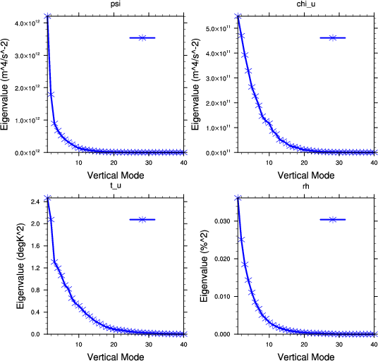
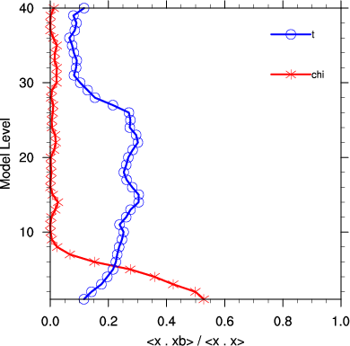
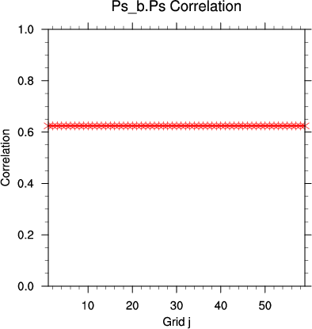

The goal of this session is to generate the background error statistics file (i.e. the B0 shown in the WRFDA flowchart) for running WRFDA.
Reference: Download the tutorial presentation
Source code
Get the pre-compiled code, if you have not done so.
WRFDA/var/scripts/gen_be/gen_be_wrapper.ksh is the main script that will be used in this practice.
GEN_BE consists of several stages. Quite a few executables and scripts are used for the process. They are listed below for reference. These executables and scripts will be called subsequently by gen_be_wrapper.ksh:
WRFDA/var/scripts/gen_be/gen_be.ksh
WRFDA/var/scripts/gen_be/gen_be_stage0_wrf.ksh
WRFDA/var/scripts/gen_be/gen_be_stage4_regional.ksh
WRFDA/var/scripts/gen_be/gen_be_cov2d.ksh
WRFDA/var/scripts/gen_be/gen_be_cov3d.ksh
WRFDA/var/build/gen_be_stage0_wrf.exe
WRFDA/var/build/gen_be_stage1.exe
WRFDA/var/build/gen_be_stage2.exe
WRFDA/var/build/gen_be_stage2a.exe
WRFDA/var/build/gen_be_stage3.exe
WRFDA/var/build/gen_be_stage4_regional.exe
WRFDA/var/build/gen_be_diags_read.exe
WRFDA/var/build/gen_be_diags.exe
WRFDA/var/build/gen_be_cov2d.exe
WRFDA/var/build/gen_be_cov3d.exe
Choice of your working directory
For this exercise you should create /kumquat/users/${USER}/DA/gen_be and use this as your working directory for this session.
mkdir /kumquat/users/${USER}/DA/gen_be
cd /kumquat/users/${USER}/DA/gen_be
Edit gen_be_wrapper.ksh
Copy gen_be_wrapper.ksh to your working directory
cp /kumquat/users/${USER}/DA/WRFDA/var/scripts/gen_be/gen_be_wrapper.ksh .
Pay special attention to the following settings and make necessary modifications for your case and directories:
vi gen_be_wrapper.ksh
......
export WRFVAR_DIR=/kumquat/users/${USER}/DA/WRFDA
export NL_CV_OPTIONS=5 # Specify control variable options
export BIN_TYPE=5 # How data is binned for calculating statistics
export START_DATE=2008020300 # the first perturbation valid date
export END_DATE=2008020912 # the last perturbation valid date
export NUM_LEVELS=40 # e_vert -1
export BE_METHOD=NMC
export FC_DIR=/kumquat/wrfhelp/DATA/WRFDA/CONUS60/fc
export RUN_DIR=/kumquat/users/${USER}/DA/gen_be/workdir
export DOMAIN=01
export FCST_RANGE1=24
export INTERVAL=12
export STRIDE=1
FC_DIR specifies the directory where the WRF forecast files (wrfout*) reside. Observe the directory structure and how the wrfout files are stored. To generate your own BE file for your own case and domain in the future, you will need to prepare and arrange your wrfout files in the same way (for example, 2008020512/wrfout_d01_2008-02-06_12:00:00; 2008020512 is the initial time, wrfout_d01_2008-02-06_12:00:00 is the 24-hour forecast valid at 2008020612).
NL_CV_OPTIONS specifies the control variable option. 5 is for the default wind control variables (psi and chi_u). 7 is for the new option in WRFDA 3.7, which uses u and v as the wind control variables.
Run gen_be_wrapper.ksh
./gen_be_wrapper.ksh >& gen_be.log
With these settings, the script should run in about 2 minutes on classroom computers.
Check output
View the log file (gen_be.log) to ensure that all stages (stage0_wrf, stage1, stage2, stage2a, stage3, stage4, gen_be_cov2d) have been run successfully.
Thu Jul 30 20:02:32 MDT 2015 Start
WRFVAR_DIR is /kumquat/users/class105/DA/WRFDA exported
RUN_DIR is /kumquat/users/class105/DA/gen_be/workdir
---------------------------------------------------------------
Run Stage 0: Calculate ensemble perturbations from model forecasts.
---------------------------------------------------------------
Beginning CPU time: Thu Jul 30 20:02:32 MDT 2015
gen_be_stage0_wrf: Calculating standard perturbation fields valid at time 2008020300
2008020200 /kumquat/wrfhelp/DATA/WRFDA/CONUS60/fc/2008020200/wrfout_d01_2008-02-03_00:00:00 /kumquat/wrfhelp/DATA/WRFDA/CONUS60/fc/2008020212/wrfout_d01_2008-02-03_00:00:00
gen_be_stage0_wrf: Calculating standard perturbation fields valid at time 2008020312
2008020212 /kumquat/wrfhelp/DATA/WRFDA/CONUS60/fc/2008020212/wrfout_d01_2008-02-03_12:00:00 /kumquat/wrfhelp/DATA/WRFDA/CONUS60/fc/2008020300/wrfout_d01_2008-02-03_12:00:00
gen_be_stage0_wrf: Calculating standard perturbation fields valid at time 2008020400
2008020300 /kumquat/wrfhelp/DATA/WRFDA/CONUS60/fc/2008020300/wrfout_d01_2008-02-04_00:00:00 /kumquat/wrfhelp/DATA/WRFDA/CONUS60/fc/2008020312/wrfout_d01_2008-02-04_00:00:00
gen_be_stage0_wrf: Calculating standard perturbation fields valid at time 2008020412
2008020312 /kumquat/wrfhelp/DATA/WRFDA/CONUS60/fc/2008020312/wrfout_d01_2008-02-04_12:00:00 /kumquat/wrfhelp/DATA/WRFDA/CONUS60/fc/2008020400/wrfout_d01_2008-02-04_12:00:00
gen_be_stage0_wrf: Calculating standard perturbation fields valid at time 2008020500
2008020400 /kumquat/wrfhelp/DATA/WRFDA/CONUS60/fc/2008020400/wrfout_d01_2008-02-05_00:00:00 /kumquat/wrfhelp/DATA/WRFDA/CONUS60/fc/2008020412/wrfout_d01_2008-02-05_00:00:00
gen_be_stage0_wrf: Calculating standard perturbation fields valid at time 2008020512
2008020412 /kumquat/wrfhelp/DATA/WRFDA/CONUS60/fc/2008020412/wrfout_d01_2008-02-05_12:00:00 /kumquat/wrfhelp/DATA/WRFDA/CONUS60/fc/2008020500/wrfout_d01_2008-02-05_12:00:00
gen_be_stage0_wrf: Calculating standard perturbation fields valid at time 2008020600
2008020500 /kumquat/wrfhelp/DATA/WRFDA/CONUS60/fc/2008020500/wrfout_d01_2008-02-06_00:00:00 /kumquat/wrfhelp/DATA/WRFDA/CONUS60/fc/2008020512/wrfout_d01_2008-02-06_00:00:00
gen_be_stage0_wrf: Calculating standard perturbation fields valid at time 2008020612
2008020512 /kumquat/wrfhelp/DATA/WRFDA/CONUS60/fc/2008020512/wrfout_d01_2008-02-06_12:00:00 /kumquat/wrfhelp/DATA/WRFDA/CONUS60/fc/2008020600/wrfout_d01_2008-02-06_12:00:00
gen_be_stage0_wrf: Calculating standard perturbation fields valid at time 2008020700
2008020600 /kumquat/wrfhelp/DATA/WRFDA/CONUS60/fc/2008020600/wrfout_d01_2008-02-07_00:00:00 /kumquat/wrfhelp/DATA/WRFDA/CONUS60/fc/2008020612/wrfout_d01_2008-02-07_00:00:00
gen_be_stage0_wrf: Calculating standard perturbation fields valid at time 2008020712
2008020612 /kumquat/wrfhelp/DATA/WRFDA/CONUS60/fc/2008020612/wrfout_d01_2008-02-07_12:00:00 /kumquat/wrfhelp/DATA/WRFDA/CONUS60/fc/2008020700/wrfout_d01_2008-02-07_12:00:00
gen_be_stage0_wrf: Calculating standard perturbation fields valid at time 2008020800
2008020700 /kumquat/wrfhelp/DATA/WRFDA/CONUS60/fc/2008020700/wrfout_d01_2008-02-08_00:00:00 /kumquat/wrfhelp/DATA/WRFDA/CONUS60/fc/2008020712/wrfout_d01_2008-02-08_00:00:00
gen_be_stage0_wrf: Calculating standard perturbation fields valid at time 2008020812
2008020712 /kumquat/wrfhelp/DATA/WRFDA/CONUS60/fc/2008020712/wrfout_d01_2008-02-08_12:00:00 /kumquat/wrfhelp/DATA/WRFDA/CONUS60/fc/2008020800/wrfout_d01_2008-02-08_12:00:00
gen_be_stage0_wrf: Calculating standard perturbation fields valid at time 2008020900
2008020800 /kumquat/wrfhelp/DATA/WRFDA/CONUS60/fc/2008020800/wrfout_d01_2008-02-09_00:00:00 /kumquat/wrfhelp/DATA/WRFDA/CONUS60/fc/2008020812/wrfout_d01_2008-02-09_00:00:00
gen_be_stage0_wrf: Calculating standard perturbation fields valid at time 2008020912
2008020812 /kumquat/wrfhelp/DATA/WRFDA/CONUS60/fc/2008020812/wrfout_d01_2008-02-09_12:00:00 /kumquat/wrfhelp/DATA/WRFDA/CONUS60/fc/2008020900/wrfout_d01_2008-02-09_12:00:00
Ending CPU time: Thu Jul 30 20:03:11 MDT 2015
---------------------------------------------------------------
Run Stage 1: Read standard fields, and remove time/ensemble/area mean.
---------------------------------------------------------------
Beginning CPU time: Thu Jul 30 20:03:11 MDT 2015
Ending CPU time: Thu Jul 30 20:03:13 MDT 2015
---------------------------------------------------------------
Run Stage 2: Calculate regression coefficients.
---------------------------------------------------------------
Beginning CPU time: Thu Jul 30 20:03:13 MDT 2015
Ending CPU time: Thu Jul 30 20:03:14 MDT 2015
---------------------------------------------------------------
Run Stage 2a: Calculate control variable fields.
---------------------------------------------------------------
Beginning CPU time: Thu Jul 30 20:03:14 MDT 2015
Ending CPU time: Thu Jul 30 20:03:15 MDT 2015
---------------------------------------------------------------
Run Stage 3: Read 3D control variable fields, and calculate vertical covariances.
---------------------------------------------------------------
Beginning CPU time: Thu Jul 30 20:03:15 MDT 2015
Ending CPU time: Thu Jul 30 20:03:20 MDT 2015
---------------------------------------------------------------
Run Stage 4: Calculate horizontal covariances (regional lengthscales).
---------------------------------------------------------------
Beginning CPU time: Thu Jul 30 20:03:20 MDT 2015
Ending CPU time: Thu Jul 30 20:04:05 MDT 2015
Ending CPU time: Thu Jul 30 20:04:05 MDT 2015
---------------------------------------------------------------
Run gen_be_cov2d.
---------------------------------------------------------------
Thu Jul 30 20:04:06 MDT 2015 Finished |
Look for be.dat in the ${RUN_DIR} you specified in your gen_be_wrapper.ksh. be.dat is the background error file which can now be used to run WRFDA.
If be.dat has not been created, check the log files for each gen_be stage (found in ${RUN_DIR}) to find the error.
The fort.* files under the directory $RUN_DIR/working are the files to be read by the graphics tools mentioned below.
Graphics
WRFDA/var/scripts/gen_be/gen_be_plot_wrapper.ksh is the main plotting script which calls other NCL scripts located in WRFDA/var/graphics/ncl/gen_be.
cp /kumquat/users/${USER}/DA/WRFDA/var/scripts/gen_be/gen_be_plot_wrapper.ksh .
Edit gen_be_plot_wrapper.ksh to provide proper settings.
vi gen_be_plot_wrapper.ksh
......
export WRFVAR_DIR=/kumquat/users/${USER}/DA/WRFDA
export GEN_BE_PLOT=${WRFVAR_DIR}/var/graphics/ncl/gen_be
export GRAPHIC_WORKS=pdf
export NUM_WE=89 # 1 point less than stagger points 90
export NUM_SN=59 # 1 point less than stagger points 60
export NUM_LEVELS=40 # 1 point less than stagger points 41
export RESOLUTION=60.0 # km
export REGION=tutorial # only for naming output purpose
export BE_DIR=/kumquat/users/${USER}/DA/gen_be/workdir/working
export BE_NROW=$NUM_LEVELS
./gen_be_plot_wrapper.ksh
This wrapper script will create 6 plot files (the "tutorial" part of the name is what you specified for "REGION" in the wrapper script):
- gen_be_global_evecs_tutorial.pdf
This displays the first five eigenvectors for the control variables psi (streamfunction), chi_u (unbalanced velocity potential), t_u (unbalanced temperature), and rh (pseudo-relative humidity).
|
 |
- gen_be_global_evals_tutorial.pdf
This displays plots of the eigenvalues by vertical mode for the control variables.
|
 |
- gen_be_lengthscales_tutorial.pdf
This displays plots of the lengthscale of the control variables by vertical mode.
|
 |
- gen_be_corr_z_tutorial.pdf
This displays plots of the correlation between unbalanced and balanced portions of chi and t by model level.
|
 |
- gen_be_corr_yz_tutorial.pdf
Similar to the above, this is a color-filled graph of the correlation between unbalanced and balanced portions of chi and t by model level, plotted by horizontal gridpoints. Because of the binning choice, there is no variation in the horizontal.
|
 |
- gen_be_corr_ps_tutorial.pdf
Similar to the above, but for surface pressure.
|
 |
If this was successful, you can continue to the next practice case.
Additional practice
Try using more data and see how your plots change. You can find up to 4 weeks of data in /kumquat/wrfhelp/DATA/WRFDA/CONUS60/fc/.
If this was successful, view plots of the gen_be statistics with the above wrapper script, and continue to try more single ob tests using the be.dat you have created.
{kind=link}
{kind=link}
{kind=link}